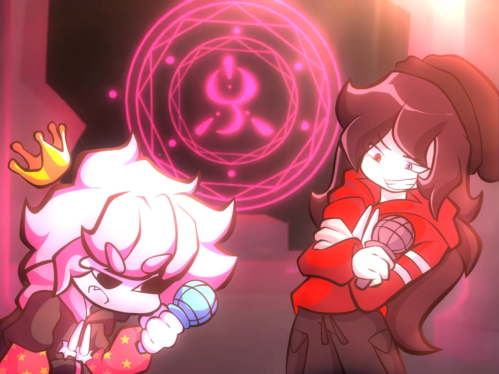
MAIN TRACK
Irreversibilia
2:22 · crédito musical no indicado.
Una versión roja y rebelde que nunca recibió una dirección completa. La nota menciona dos canciones y un cover, pero el material entregado contiene un audio independiente y un video llamado Bliss.
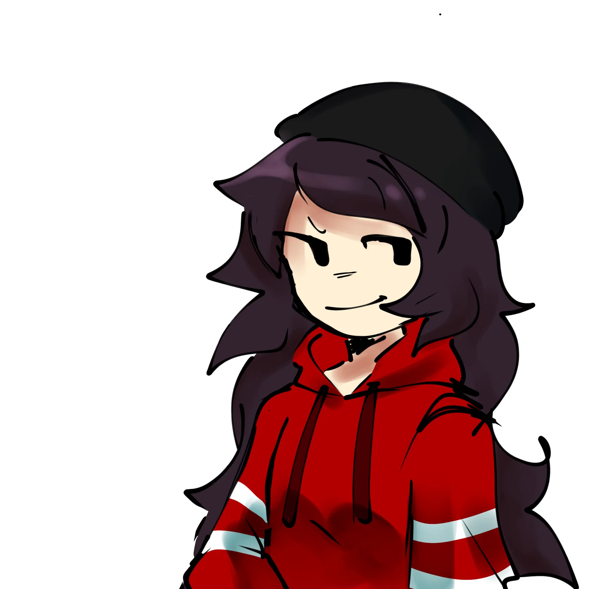

2:22 · crédito musical no indicado.
Video conservado · 2:19. El material no confirma si corresponde a la segunda canción mencionada o únicamente a un cover.
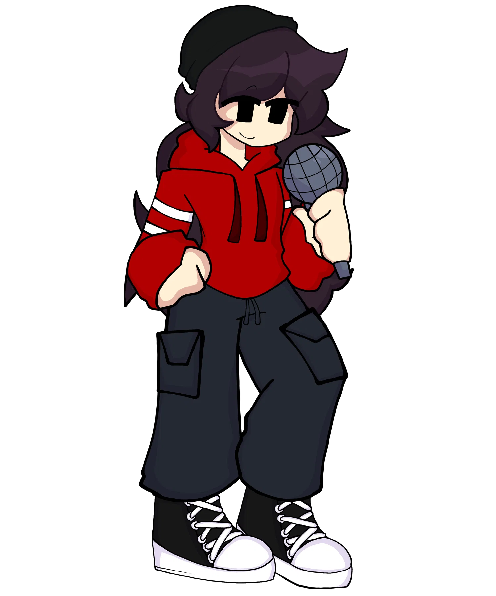
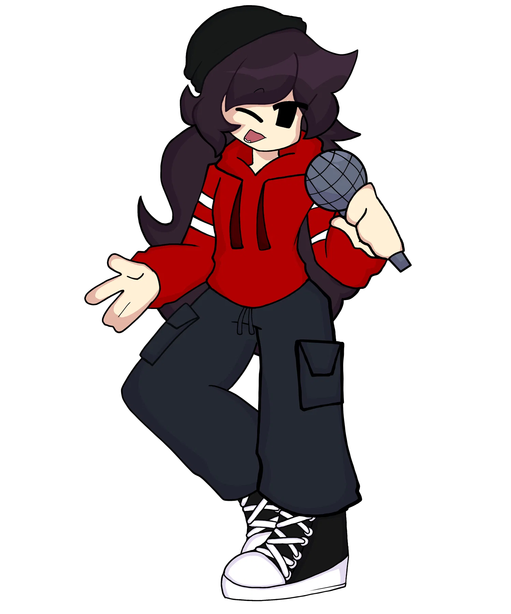
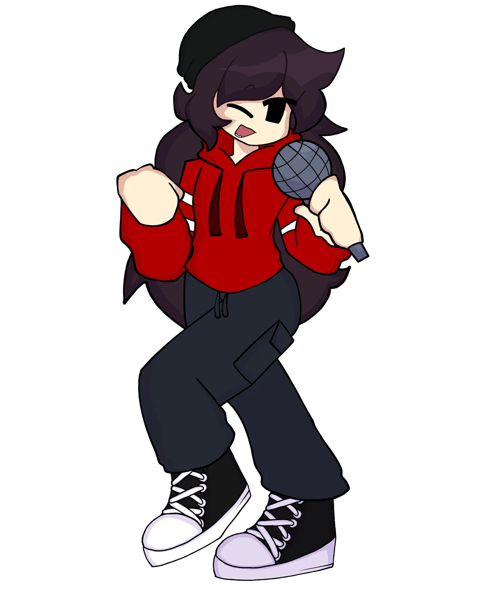
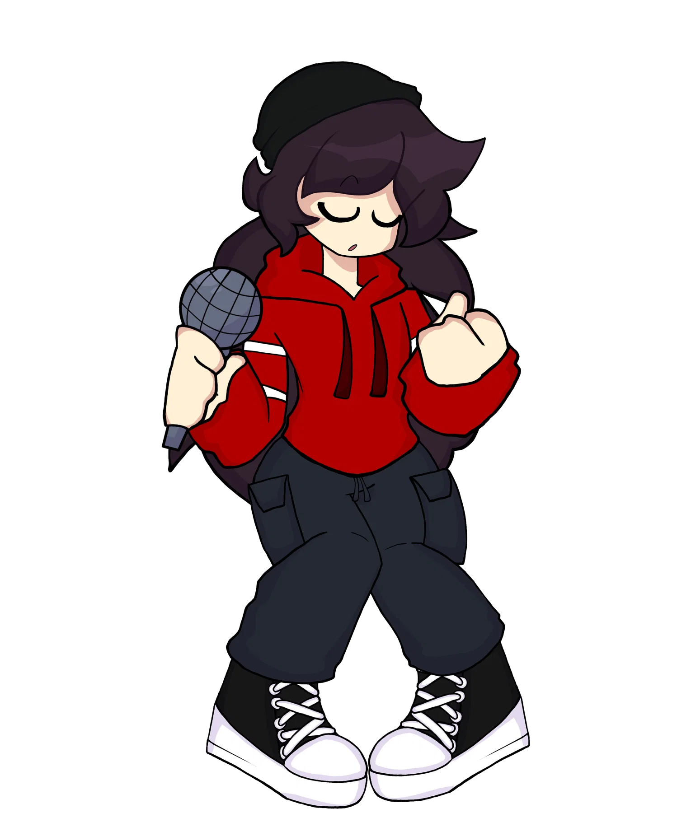
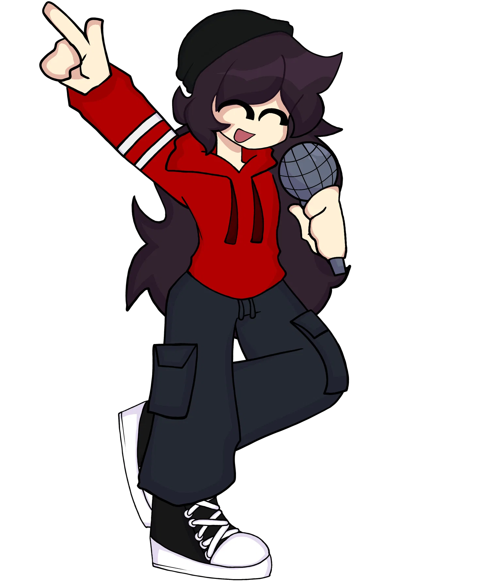
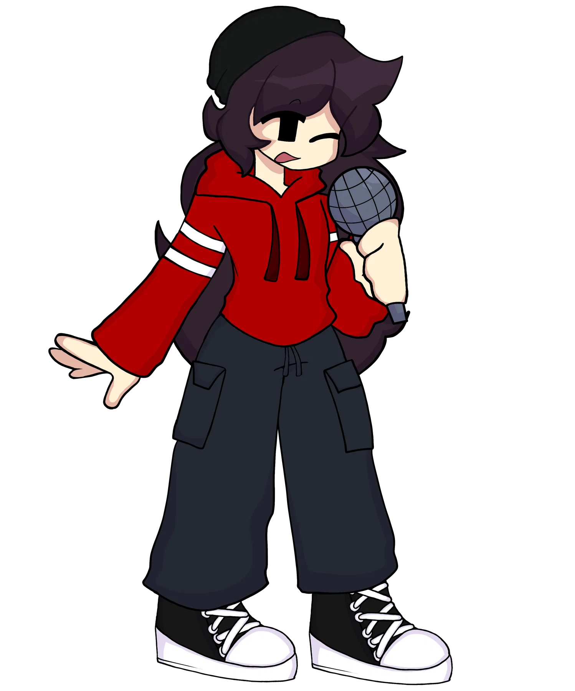
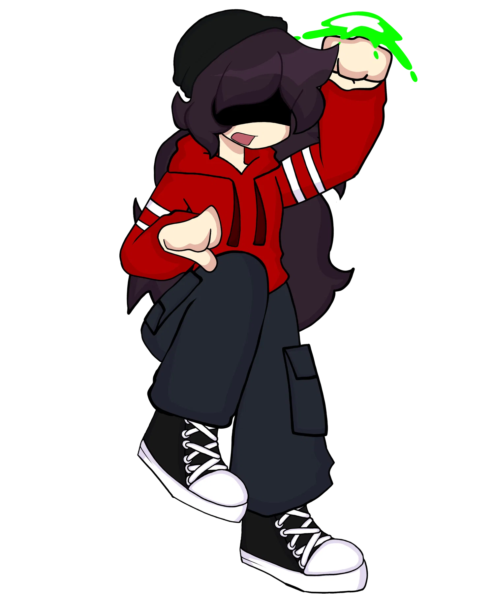
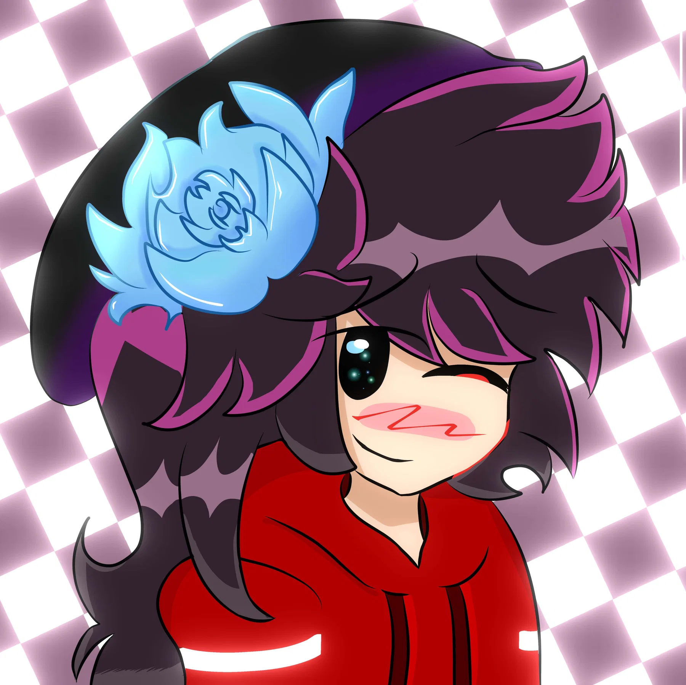
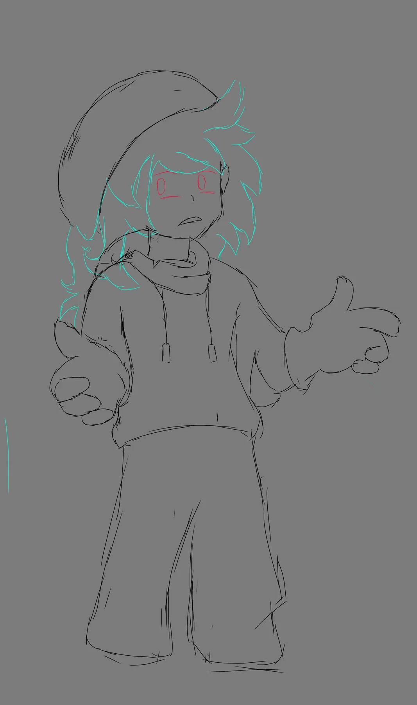